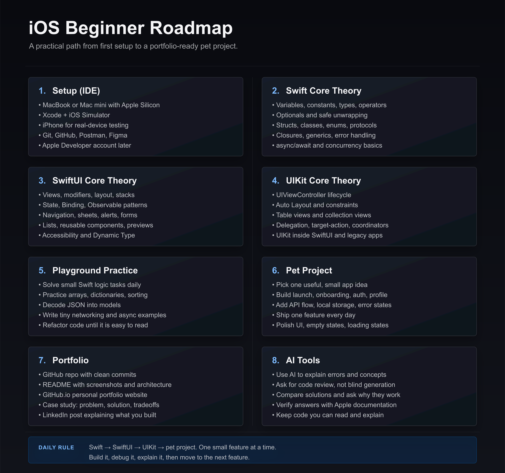

iOS Developer Building scalable iOS apps with SwiftUI & UIKit
Remote • On-site • Hybrid
5
Years
8
Projects
4
Apps
Swift Code
Core Swift
Core Swift Quiz
30 questions with instant scoring, correct-answer highlights, and reset.
Swift Intro
Swift is Apple's modern programming language for building apps across iOS, macOS, watchOS, tvOS, visionOS, and beyond.
Where It Came From
Introduced by Apple in 2014, Swift was created as a safer, faster, and more expressive alternative to Objective-C. The project was started by Chris Lattner around 2010, with major contributions from Apple's compiler and developer tools teams.
Swift did not appear from nowhere. It carries ideas from Objective-C, C, C++, Rust, Haskell, Python, Ruby, C#, and other modern languages.
Why Apple Built It
Safe: optionals and strong typing help catch mistakes early.
Fast: compiled performance with safer defaults.
Readable: less ceremony, more intention.
Modern: closures, generics, async/await, protocols, extensions, and pattern matching.
Core idea
"Code should be expressive without being fragile."
What Swift Is Used For
Building iPhone, Mac, Apple Watch, and visionOS apps.
Writing server-side backends with frameworks like Vapor.
Creating command-line tools, SDKs, frameworks, and production-grade software.
Teaching programming and prototyping ideas quickly.
The Philosophy
Features like let, guard, if let, struct, protocol, and async/await are not just syntax. They represent a philosophy: make the correct path easy, and the dangerous path visible.
Swift sits at the intersection of design, engineering, safety, and creativity.
Swift under the hood combines compiler checks, memory management, type safety, and runtime support.
Compiler pipeline
Swift Code -> Parser -> Type Checker -> SIL -> LLVM -> Machine Code
Parser
First, Swift reads our code and turns it into a structure the compiler can understand.
Constants and variables.
Functions, types, expressions, and scopes.
Type Checker
The type checker verifies that our code makes sense before the app runs. It understands that 25 is an Int, "Alex" is a String, and true is a Bool.
let count: Int = "10" is an error. Swift catches the mistake at compile time.
SIL
After type checking, Swift code becomes SIL: Swift Intermediate Language. This is where Swift-specific optimization happens.
The compiler can reason about value types, generics, protocols, ARC, ownership, and memory behavior.
LLVM
After SIL, Swift uses LLVM. LLVM lowers the code closer to machine instructions and applies performance optimizations.
It helps with inlining, removing unused code, and generating optimized machine code for the target device.
Memory Management
Swift uses ARC: Automatic Reference Counting. ARC tracks how many strong references point to an object.
When no strong references remain, the object can be removed from memory. This gives Swift automatic memory management without a traditional garbage collector.
Value Types
Swift encourages value types like struct and enum. Value types make code easier to reason about because data changes are more explicit.
Swift also uses optimizations like copy-on-write, so value semantics do not always mean expensive copying.
Optionals
Optionals are a core safety feature. An optional means there may be a value, or there may be no value.
Swift forces us to handle missing values directly, instead of letting them become unexpected crashes later.
Concurrency
Modern Swift includes structured concurrency. async/await makes asynchronous code easier to read, tasks give async work structure, and actors help protect shared mutable state.
@MainActor helps keep UI updates on the main thread.
Core idea
Swift is designed to make safe code feel natural.
Why It Feels Safe
Strong typing catches mistakes early.
Optionals make absence visible.
ARC manages memory automatically.
Value types reduce hidden sharing.
The Balance
High-level enough to be expressive.
Low-level enough to be fast.
Practical enough for real production apps.
iOS development is the process of building apps for Apple's mobile ecosystem.
An iOS Developer Works With
UI and UX.
Architecture.
State management.
Networking.
And Also
Persistence.
Performance.
Testing.
App Store delivery.
What Is iOS Development?
iOS development means creating apps for iPhone and iPad.
Most modern iOS apps are built with Swift, SwiftUI or UIKit, Xcode, and Apple SDKs.
The Apple Toolset
Swift is the main language. Xcode is the main development environment.
Apple SDKs provide tools for UI, networking, storage, maps, camera, notifications, payments, and more.
Developer mindset
"Is it maintainable? Is it testable? Does it feel good to use?"
What Does an iOS Developer Do?
An iOS developer turns ideas into working mobile products.
Building screens and handling user actions.
Connecting APIs and managing app state.
Saving local data and handling errors.
Fixing bugs and preparing releases.
UI Layer
The UI layer is what the user sees and touches. In iOS, this usually means SwiftUI or UIKit.
SwiftUI is declarative: you describe the UI for a given state. UIKit is imperative: you control views and updates more manually.
App Architecture
Real apps need structure. Without architecture, screens become too large, logic gets duplicated, and small changes become risky.
MVC.
MVVM.
Clean Architecture.
VIPER.
TCA.
Data & APIs
Most iOS apps work with data from REST APIs, GraphQL, local databases, UserDefaults, Keychain, and cloud services.
An iOS developer needs to understand networking, JSON decoding, caching, offline behavior, and error handling.
Performance
iOS apps should feel fast.
Smooth scrolling.
Fast launch time.
Efficient images.
Safe memory usage.
No main-thread blocking.
Testing
Testing helps protect the app from breaking as it changes.
Unit tests.
UI tests.
Snapshot tests.
Integration tests.
The main idea
You are building software people carry in their hands every day.
The Balance
Technical enough to be reliable.
Visual enough to care about details.
Practical enough to ship real products.
What It Takes
An iOS developer builds product experiences for Apple platforms.
They need to understand code, design, architecture, data, performance, and users.
Becoming an iOS developer means learning the Apple ecosystem, building real apps, and practicing the habits of shipping reliable mobile products.
Start With the Basics
Learn Swift fundamentals.
Understand optionals, structs, classes, protocols, and closures.
Practice async/await, error handling, and collections.
Build small features before large apps.
Learn the Apple Stack
SwiftUI for modern declarative UI.
UIKit for existing apps and deeper platform control.
Xcode for building, debugging, testing, and releasing.
Apple SDKs for storage, networking, camera, maps, and notifications.
Core idea
Do not only watch tutorials. Build, break, debug, and ship.
Equipment
A Mac is the main machine for iOS development because Xcode runs on macOS.
MacBook Air or Pro with Apple Silicon.
At least 16 GB RAM for a smoother workflow.
An iPhone for real-device testing.
Optional iPad if you want to support larger layouts.
Tools
Xcode for coding, simulators, signing, and App Store delivery.
Postman for testing APIs.
Figma for reading designs and specs.
Git and GitHub for version control.
Firebase, Charles, or Proxyman when the app needs them.
Build Real Projects
Projects teach the parts tutorials often skip: state, navigation, persistence, empty states, errors, and edge cases.
Todo app with local storage.
Weather or movies app with an API.
Auth flow with validation.
Small portfolio app with polished UI.
Learn Professional Habits
Write readable code.
Separate UI, state, networking, and persistence.
Handle loading, success, empty, and error states.
Use accessibility labels and Dynamic Type.
Test important logic.
AI Tools for Beginners
AI can help you learn faster, but it should not replace understanding.
Ask AI to explain Swift errors in simple language.
Use it to review your code and suggest improvements.
Generate small practice tasks, not entire apps.
Ask why a solution works before you copy it.
Use AI Carefully
Good beginner tools include Codex, Cursor, GitHub Copilot, Perplexity, and official Apple documentation.
The goal is to become a stronger developer, not someone who can only run code they cannot read.
Prepare for Work
Share code that shows how you think. A small finished app is better than five abandoned demos.
Publish projects on GitHub.
Write clear README files.
Explain architecture choices.
Practice technical interviews and code reviews.
The Path
First learn Swift. Then build UI. Then connect data. Then structure the app. Then test, polish, and release.
That loop is how a beginner slowly becomes someone who can ship real iOS products.
Daily practice
Start with Swift -> SwiftUI -> UIKit -> Build your own pet project.
Set a simple daily goal: build at least one feature every day.
Add a launch screen.
Build an onboarding flow.
Create an authentication screen.
Add a profile screen.
One feature at a time, one day at a time. This will take you much further than building an entire app in a few hours with tools you do not understand.
A simple visual roadmap for beginner iOS developers: from setup and core theory to playground practice, pet projects, portfolio, and AI tools.

How to use it
Move through the roadmap in order, but build small features while you learn.
Do not wait until you know everything. Learn one concept, apply it in a tiny screen, then repeat.
You can start iOS development without an IT background, but you need a clear routine, small projects, and the habit of explaining what your code does.
Start With Computer Logic
Before architecture and apps, learn how programs think.
Variables, conditions, loops, functions.
Arrays, dictionaries, strings, numbers.
Input, output, errors, and edge cases.
Reading code line by line without panic.
Your First Tools
Keep your setup small at the beginning.
Xcode and Swift Playgrounds.
GitHub for saving progress.
Figma for reading simple designs.
Postman only when you start APIs.
Core idea
You do not need an IT background to start. You need consistency, small tasks, and code you can explain.
First 30 Days
Days 1–7: Swift basics in playgrounds.
Days 8–14: small SwiftUI screens.
Days 15–21: navigation, forms, state.
Days 22–30: one tiny app with local data.
Daily Practice
Do one visible thing every day.
Create a button and handle a tap.
Build a login screen without backend.
Save a value locally.
Fix one bug and write what caused it.
What to Avoid
Jumping into huge apps too early.
Copying code you cannot explain.
Spending weeks only watching tutorials.
Learning every architecture before building UI.
How to Use AI
AI is helpful when you use it as a teacher, not as a replacement.
Ask it to explain compiler errors.
Ask for simpler versions of code.
Ask it to review your solution.
Always rewrite the answer yourself.
Your First Portfolio App
Build one small finished app instead of five unfinished demos.